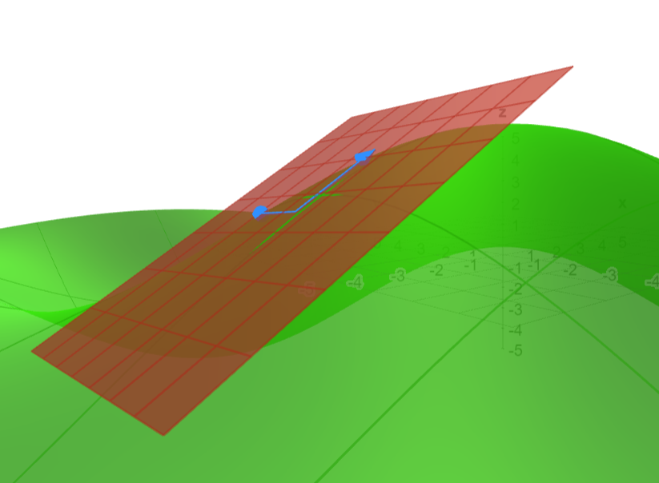
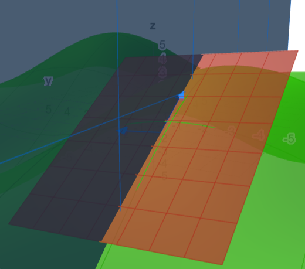
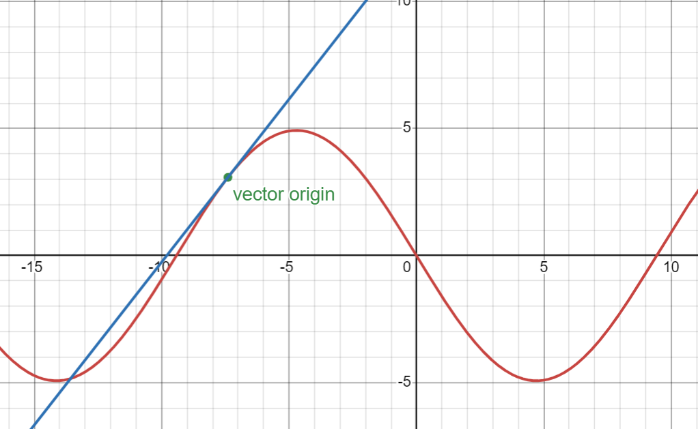
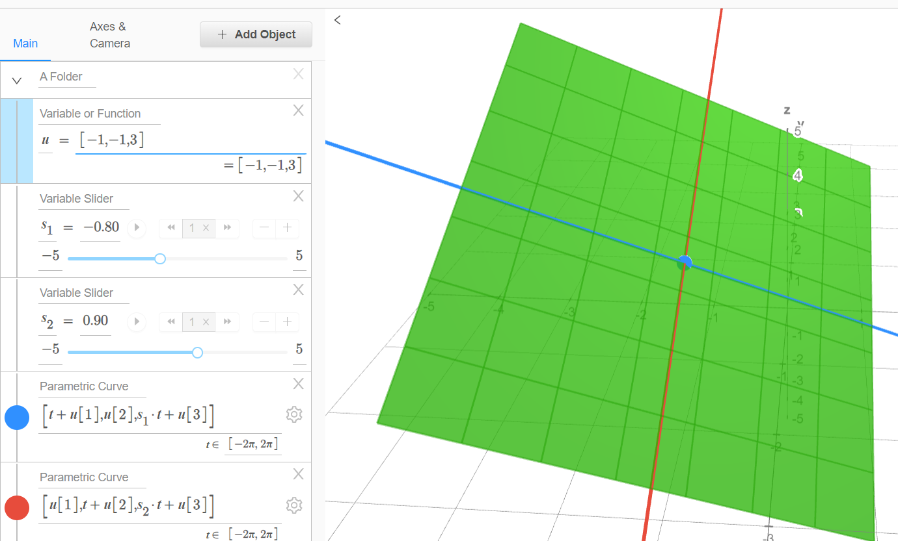

Lagrange multipliers
This is going to be my attempt at explaining Lagrange multipliers in multivariable calculus optimization. I thought that this concept was really cool the first time I learned about it so I really wanted to talk about it here. So I'm gonna be doing that by attempting to explain it. For anyone that already knows about them, the teaching strategy here is to first talk about dot products, specifically about what it means for two vectors to be orthogonal and mainly about how you use dot products to represent the space of all vectors that is perpendicular to a specific one. After that, there will be a review of directional derivatives. The main concept about directional derivatives that's needed here is that directions orthogonal to the gradient vector at a certain point are directions where the derivative is 0. Next will be an attempt to talk about thinking of functions from it's input space. This will enable the reader to be able to think about directional derivatives orthogonal to the gradient vector without really visualizing the function more nicely. After that, the main topic will be covered.
So first is a short review of dot products. The dot product of 2 vectors A and B is the same as $$A \cdot B = |A||B|cos(\theta)$$ where $\theta$ is the angle between A and B. An implication of that is two non-zero vectors A and B are orthogonal to each other if and only if the result of their dot product is 0 because $cos(90^{\circ}) = 0$. In other words, $A \cdot B = 0$. An obvious implication of this is that you can think of the set of all vectors that is orthogonal to some vector $v$ using dot products. That is, this set would be the same as $\{w | w \cdot v = 0\}$. The set of all vectors that is on the same line as $v$ are all vectors that is just a scalar multiple of v. Therefore, the set can be represented as $\{\lambda v | \lambda \in \mathbb{R}\}$ but also as $\{w | w cdot v = |w||v|\}$.
Next will be about gradients and directional derivatives. The gradient of a multivariable function $f(\vec{v})$ is a vector representing the partial derivative of $f$ in terms of every individual input variable. In other words, if we denote $\vec{v}$ as being $[v_1, v_2, ..., v_n]$, then the gradient vector of f at $\vec{v}$ is denoted: $$ \nabla f(\vec{v}) = \left[ \frac{\partial f}{\partial v_1}, \frac{\partial f}{\partial v_2}, ..., \frac{\partial f}{\partial v_n} \right] $$ There is a way of interpreting this visually in 3 dimensions to increase intuition. Recall that in single-variable calculus, the derivative at a certain point represents the slope of the line tangent to the curve of the function at that point. And we know by intuition about why that relates to the rate of change of the function at that point. But what about higher dimensional functions? How does the gradient vector relate to the rate of change of the function at a certain point? Is there something analogous to the concept of a line tangent to the curve at a certain point in 3 dimensions? Well, yes. In 3-dimension, you can have a plane that is tangent to the curve at a certain point. Here is a picture of an example:
The graph of $5\sin(\frac{x}{3})\cos(\frac{y}{3})$ at $[-7.4, -4.2]$
In there, you can slightly see that the red plane is tangent to the curve at the point that is the origin of the two blue vectors. This is not extremely clear because of the program I'm using but it is what it's supposed to be and it's close enough. We can intuitively imagine how that plane might relate to the rate of change of the function at that point. But then what does the "rate of change" of a multivariable function (like this function) really mean? Well, our intuition should tell us that it might mean the rate of change of the function as you go in every direction. Directional derivatives is the derivative of a multivariable function in a certain direction. Another way to think about it in this example is that you might want to take the derivative of the function in the same general direction as the increasing blue vector. Notice that when I say the same direction as the blue vector, I'm not talking about the exact same direction. Our input space is in 2 dimensions, so you can only take "2 dimensional directions." So what I'm really talking about is taking the derivative in the direction of the increasing blue vector that is somehow projected onto the xy-plane. The result of that directional derivative is now the slope of how that blue vector inreases on the z axis (up). In general, given a certain 2-dimensional direction and a certain point in 2-dimensions, you can imagine that taking the directional derivative of a 3D function at that point in that direction is the same taking a 2-dimensional slice of the function such that going up in the x axis is the same as going further in the direction that was given earlier. In the case of taking the directional derivative of the previous example in the same general direction as the increasing blue vector, here is how the 2-dimensional slice looks like:
How exactly the slicing is done

The result of the slicing
Before I continue, I will introduce the term "directional vector." When I say directional vector, it always means a vector that has a magnitude/length of 1 and that's it. So in general, taking the derivative of any multivariable function $f(\vec{v})$ in a certain direction $\vec{v}$ can intuitively be thought of slicing the function in the same way I mentioned before, and then taking a basic single-variable derivative. So let's try to make some formulas that lines up with that intuitive description. How exactly do you "slice" a multivariable function? Well, given the function $f(\vec{v})$, slicing it in the same direction as $\vec{v}$ while containing the point $\vec{u}$ is the same as creating the single-variable function $f_{\vec{v}}(x) = f(x \vec{v} + \vec{u})$ where x is just a scalar. Notice that this means x = 0 would evaluate the multidimensional function at $\vec{u}$ and increasing x would be the same as moving in the same direction as $\vec{v}$ in the original multidimensional function. So this should line up with our intuition of "slicing" a function in the same way that was described earlier. Therefore, the directional derivative of $f$ in the direction of $\vec{v}$ is just the derivative of $f_{\vec{v}}(x)$.
Remember that we've only been exploring intuitive methods of thinking of gradients and directional derivatives. We might have that formula and slicing intuition for directional derivatives, but how does that relate to gradients? Evaluating the derivative of $f_{\vec{v}}$ feels like it's only doable by expanding the inner $f$ and then manually calculating the derivative. So now I'll be explaining the relation between directional derivatives and the gradient of a multivariable function.
Let's go back to the earlier graph of $5\sin(\frac{x}{3})\cos(\frac{y}{3})$ at $[-7.4, -4.2]$. We know that the red plane is tangent to the curve at the point $\vec{u} = [-7.4, -4.2]$. Yet we know that, if we try to take the derivative of the function at $\vec{u}$ in a certain direction vector $\vec{v}$, then the result is also the slope of the line in the direction of $\vec{v}$ that is tangent to the curve at $\vec{u}$ because that is what it means to take the derivative of a function. So both this line and the plane is tangent to $f$ at $\vec{u}$ in the direction of $\vec{v}$. Just go back to the slicing images. What I'm saying here is that the line on the 2-dimensional graph, if put back on the 3-dimensional graph's blue slicing plane, then it will also contain the origin of the two blue vectors AND it's going to be contained on the red plane. So actually, the slope of the line is the exact same as the slope of plane tangent to $f$ at $\vec{u}$ in the direction of $\vec{v}$. The implication of this is that you can get the slope of the line, which is the directional derivative in the direction of $\vec{v}$ achieved by slicing the multidimensional function about a plane, by getting the slope of the plane tangent to f at $\vec{u}$ in the direction of $\vec{v}$. So the problem of getting the directional derivative by slicing the multidimensional function can be done by getting the slope of the plane tangent to the multidimensional function at $\vec{u}$ in the direction of $\vec{v}$.
But how is that supposed to make the poblem easier? How do you get the slope of that tangent plane anyway? How is the plane itself even defined? What identifies a certain plane? Now this is the time to talk about the last question. A plane in 3 dimensions can actually be identified by two intersecting lines. Try to take two pencils and imagine they're lines and put them on top of each other. You should intuitively be able to imagine that there's only 1 plane that goes through both of those lines. And these lines can go in any direction as they're intersecting each other, and there will only be 1 plane that goes through both of the lines. An implication of this is that you can identify a plane using two intersecting lines. So you would imagine that you can identify a plane using two intersecting lines in 3-dimensions.
Let's figure out how to do that exactly. The intersection is just a single point, so you would imagine that you should be able to pick an origin of the line. Let's say that the origin is at some vector $\vec{x}$. To create a plane, the next step is to get two intersecting lines that can't ever be the same line. You can take the line that always goes in the direction of the x-axis and the line that always goes in the direction of the y-axis. Now those two lines will never intersect, and you can therefore create a single plane that goes through each of those lines. And there are actually many lines that only goes in the direction of the y-axis and ones that go on the x-axis because we haven't decided how quickly the line ascends/descends. And each of those speed of ascent/descent can each be controlled by a single scalar. Below is an example image. The blue dot is the specified intersection point, the blue line is the line that always goes in the direction of the x-axis, while the green line always goes in the direction of the y-axis. $u$ represents the coordinates of that blue dot, $s_1$ represents the ascending speed or slope of the blue line, and $s_2$ for the red line. There is only 1 plane that goes through all of that.
For a vector that is defined like that, you can always get two vectors, one contained in the blue line and one contained in the red line, then this plane is actually the span of those two vectors added by the intersection point. In other words, every vector on this plane can be denoted as $\vec{u} + \lambda_1\vec{v_1} + \lambda_2\vec{v_2}$ where $lambda_1$, $lambda_2$ can be any two arbitrary scalars, $\vec{u}$ is the intersection point (blue in the picture), and $\vec{v_1}$, $\vec{v_2}$ are the two vectors on the lines
Okay, so what? Well, let's go back to what the gradient is. Going back to the first image about the sinusoidal function, I will now tell you that the two blue arrows are actually the derivative of f in the direction of the x-axis and the y-axis respectively. Meaning that the slope of the lines is the first element of the gradient vector